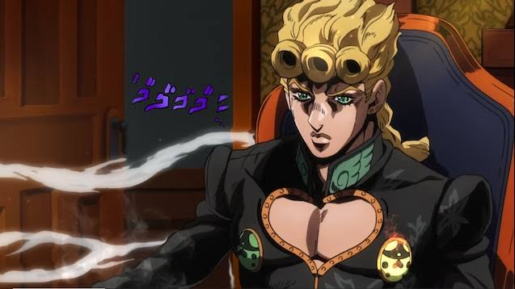
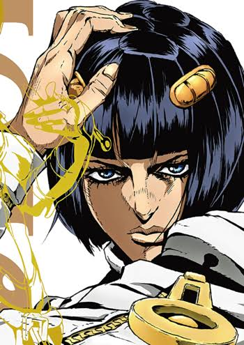
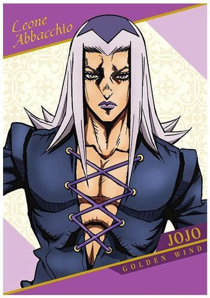
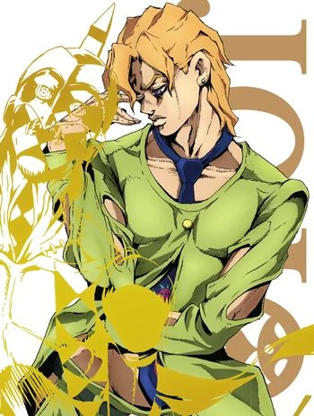
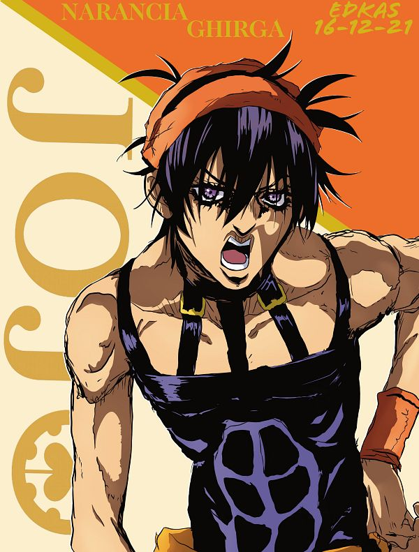
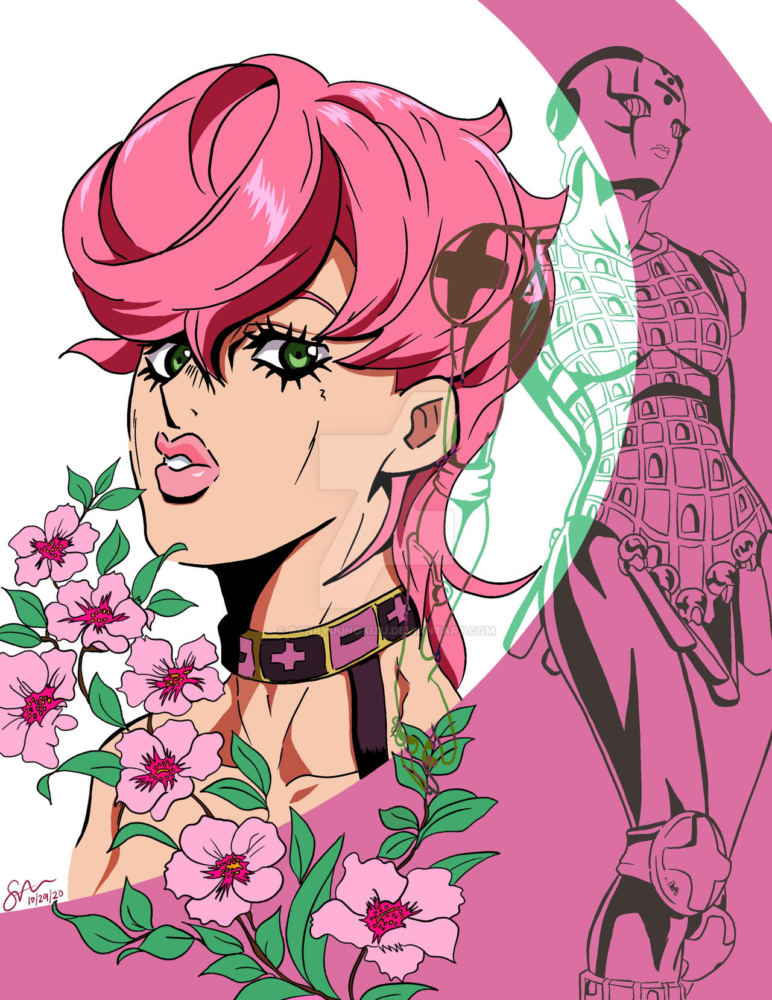
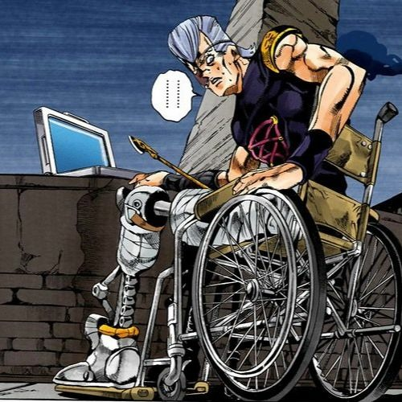
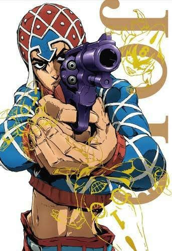

JoJo's Bizarre Adventure: Golden Wind (Parte 5) segue a jornada de Giorno Giovanna, um jovem com ambições de se tornar o "Rei dos mafiosos" para transformar a organização Passione e usar seu poder para fazer o bem. Giorno é filho de DIO, mas carrega os ideais de seu próprio pai, Jonathan Joestar. Ele se junta a uma equipe de outros stand users, incluindo o carismático Bruno Bucciarati e seus aliados, para combater o líder da Passione, o cruel e manipulador Diavolo. Durante a trama, a equipe enfrenta diversos inimigos e desafios, com intensas batalhas envolvendo stands poderosos. A história culmina em uma luta final, onde Giorno e seus aliados buscam derrubar Diavolo e instaurar um novo sistema de justiça dentro da máfia, cumprindo o sonho de Giorno de criar um mundo melhor.
O grupo de Bucciarati é uma equipe formada por membros da máfia Passione, liderada por Bruno Bucciarati. Ele é o líder e o mais confiável dos membros. A equipe é composta por Trish Una, filha de Diavolo, que se junta ao grupo em busca de proteção. Há também o esperto Narancia Ghirga, o sério Mista, o leal Abbacchio, e o calmo e forte Fugo. Juntos, eles formam uma equipe unida, com o objetivo de derrubar Diavolo e mudar a Passione de dentro para fora. Cada um tem um stand único e desempenha um papel importante nas batalhas que enfrentam.
Giorno Giovanna:

Giorno Giovanna é o protagonista da Parte 5 de JoJo's Bizarre Adventure, intitulada Vento Aureo. Filho de DIO Brando, mas com sangue de Jonathan Joestar, ele possui uma herança única, combinando os poderes de ambos. Giorno é determinado, calmo e com um forte senso de justiça, com o objetivo de tomar o controle da máfia italiana para reformá-la de dentro e acabar com a corrupção que domina a sociedade. Seu Stand, Gold Experience, tem a habilidade de criar vida e manipular organismos, o que o torna um adversário formidável. Ao longo da história, ele cresce como líder e estrategista, enfrentando desafios e aliados traiçoeiros em sua jornada para alcançar seus ideais.
Bruno Bucciarati:

Bruno Bucciarati é um dos protagonistas da parte 5 de JoJo's Bizarre Adventure, intitulada Vento Aureo. Ele é o líder do grupo de Stand-users chamado "Passione", que inicialmente segue as ordens do chefe, mas depois se rebela em busca de um propósito maior. Conhecido por sua lealdade inabalável e senso de justiça, Bruno é um personagem complexo, que luta para proteger seus amigos e alcançar seus objetivos, mesmo quando enfrenta adversidades imensas. Seu Stand, Sticky Fingers, tem a habilidade de criar zíperes em qualquer superfície, permitindo que ele abra ou feche espaços e até crie portais. Essa habilidade única reflete sua personalidade pragmática e criativa, sempre buscando soluções inesperadas para os problemas que surgem. Ao longo da história, Bruno se torna um líder carismático e um dos personagens mais admirados pelos fãs da série.
Leone Abbacchio:

Leone Abbacchio é um dos membros do grupo Passione na parte 5 de JoJo's Bizarre Adventure, Vento Aureo. Ex-policial, Abbacchio tem um passado marcado por arrependimentos e decepções, o que o tornou uma pessoa cínica e amarga. No entanto, sua lealdade ao líder Bruno Bucciarati e seu compromisso com a missão são inquestionáveis. Seu Stand, Moody Blues, tem a habilidade de reviver eventos passados e mostrar como as coisas aconteceram, o que torna Abbacchio um excelente aliado em investigações e confrontos. Apesar de sua aparência severa e postura reservada, Abbacchio tem um lado mais humano e vulnerável, especialmente ao interagir com seus companheiros. Sua trajetória é marcada por um processo de redenção, mostrando que, mesmo diante das falhas do passado, há sempre a possibilidade de encontrar um novo propósito.
Pannacotta Fugo:

Panaccotta Fugo é um dos membros do grupo de Bruno Bucciarati em Vento Aureo, a parte 5 de JoJo's Bizarre Adventure. Fugo é um jovem inteligente e talentoso, mas tem um temperamento explosivo e uma tendência a agir impulsivamente, o que, muitas vezes, gera conflitos. Seu Stand, Purple Haze, é incrivelmente poderoso e perigoso, com a habilidade de liberar um gás mortal que pode causar a morte instantânea a quem o inalar, o que faz com que Fugo tenha um grande controle sobre sua força, temendo as consequências de perder o controle. Embora Fugo possua uma grande lealdade a seus amigos e ao grupo, ele é um dos membros que mais questiona as decisões do líder, Bruno, e enfrenta dilemas internos, especialmente sobre os limites de seu próprio poder e o que ele está disposto a fazer em nome da missão. Sua jornada, apesar de curta na história, é uma das mais trágicas, revelando o dilema de lutar por um ideal enquanto enfrenta os próprios demônios internos.
Narancia Guirga:

Narancia Ghirga é um dos membros do grupo de Bruno Bucciarati em Vento Aureo, a parte 5 de JoJo's Bizarre Adventure. Ele é um jovem impulsivo, enérgico e muitas vezes ingênuo, mas com um coração grande e leal aos seus amigos. Narancia cresceu em um ambiente difícil e, por isso, tem uma grande admiração por Bruno, que se torna uma figura protetora para ele. Seu Stand, Aerosmith, é uma pequena aeronave equipada com armas, que pode detectar e atacar alvos a uma grande distância. Narancia, apesar de seu jeito irreverente, demonstra grande coragem e crescimento ao longo da história, especialmente ao enfrentar desafios difíceis. Sua amizade com os outros membros do grupo, especialmente com Bucciarati, é uma das partes mais tocantes de sua trajetória, e sua morte trágica deixa uma marca profunda na história.
Trish Una:

Trish Una é uma das personagens principais da parte 5 de JoJo's Bizarre Adventure, intitulada Vento Aureo. Ela é filha de Donatello Versus, um dos membros da máfia Passione, e desempenha um papel crucial na trama. Inicialmente, Trish é retratada como uma jovem fragilizada, sem muito conhecimento sobre o mundo das organizações criminosas. Porém, conforme a história avança, ela demonstra grande coragem e força, especialmente ao se unir ao protagonista, Giorno Giovanna, e seus aliados.
Trish possui um Stand chamado Spice Girl, que tem a habilidade de amolecer objetos e torná-los mais flexíveis, o que lhe permite realizar ataques estratégicos e proteger a si mesma e aos outros. Ao longo da série, sua evolução de uma garota ingênua para uma personagem mais forte e determinada é notável, refletindo o tema de superação e autodescoberta que permeia a obra de Hirohiko Araki.
Jean Pierre Polnareff:

Jean Pierre Polnareff é uma figura importante em JoJo's Bizarre Adventure, especialmente conhecido por sua participação nas partes 3 (Stardust Crusaders) e 5 (Vento Aureo). Na parte 5, Polnareff já é um homem mais experiente e marcado por suas vivências, tendo se envolvido em várias batalhas ao lado de outros JoJos. Ele aparece como um aliado de Giorno Giovanna e sua equipe, trazendo consigo um grande senso de justiça e determinação, além de um forte desejo de vingança por eventos passados.
Embora sua participação em Vento Aureo seja mais limitada, Polnareff exerce um papel crucial em momentos decisivos da trama. Ele ainda possui o Stand Silver Chariot, que é uma espada de alta velocidade e grande habilidade de combate corpo a corpo. Em sua jornada na parte 5, Polnareff enfrenta dificuldades e desafios, mas demonstra, mais uma vez, seu caráter altruísta e sua lealdade aos amigos. Sua presença em Vento Aureo também tem uma importante conexão com os eventos e a evolução de outros personagens, mostrando sua relevância no universo de JoJo como um herói marcado por sua história e sacrifícios.
Guido Mista:

Guido Mista é um dos principais membros do grupo de aliados na parte 5 de JoJo's Bizarre Adventure, Vento Aureo. Ele é um jovem assassino da máfia Passione e um dos companheiros mais próximos de Giorno Giovanna, com quem compartilha uma forte amizade e lealdade. Mista é conhecido por seu comportamento descontraído e seu jeito confiante, mas também tem um lado mais impulsivo e nervoso, especialmente quando se trata de seu Stand, o Sex Pistols.
O Stand de Mista, Sex Pistols, é um conjunto de pequenas entidades que atuam de forma independente, disparando balas com grande precisão e capacidade de desviar para atingir os alvos com estratégias criativas. Mista é extremamente habilidoso no uso de seu Stand, e a forma como ele trabalha em conjunto com as "pistolas" é uma das marcas registradas de sua luta. Ao longo da história, ele demonstra um forte senso de camaradagem e coragem, sendo um dos pilares do time durante a jornada para derrubar o chefe da máfia, enquanto também lida com suas próprias inseguranças e medos.